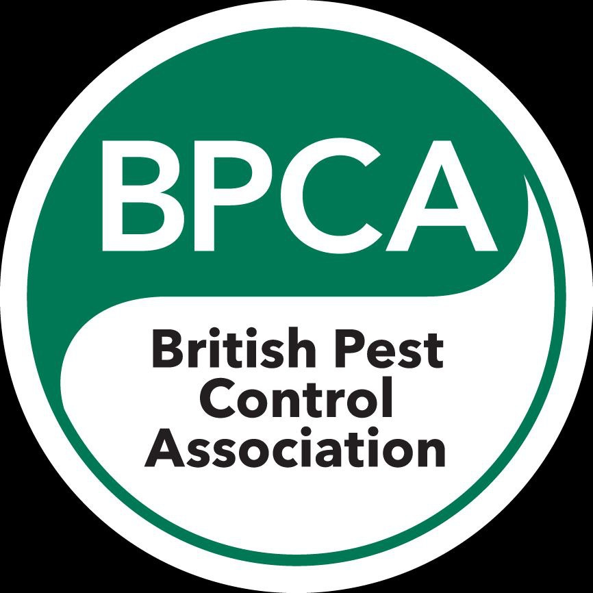

Welcome to Northwest Pest and Hygiene
Welcome to Northwest Pest and Hygiene here at Northwest Pest and Hygiene. our dedicated team of pest control technicians have been working hard over the last ten years, in which time we have kept Local Authorities, Homes, Businesses and Commercial premises in the Manchester, Stockport and Cheshire areas the pest solutions to resolving your pesty problems.
We work quickly and efficiently to remove pests and put in place deterrents to stop them from returning. We also offer a deep clean decontamination service to get rid of any bacteria or viruses left behind.